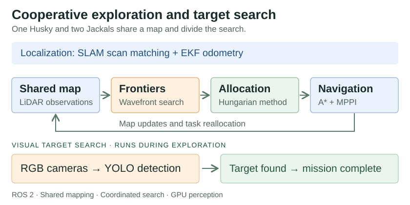

Multi-robot systems · Task allocation & perception
Cooperative exploration and target search
Scaling autonomous exploration from a physical Jackal to a coordinated Husky-and-Jackal team for exploration and visual target search.

Overview
Cooperative search in an initially unknown indoor environment requires robots to decide which unexplored regions to visit and which robot can reach them. This project develops a shared-mapping and frontier-allocation framework that scales from a physical Jackal to a heterogeneous robot team. The search begins with a specified target class and no known target location. Robot mobility, sensing capabilities and travel cost define the scope of exploration and coordination.
Technical contributions
- Mapping and localization. Integrated Adaptive Monte Carlo Localization (AMCL) with EKF-based odometry estimation for robot localization. Wheel encoder measurements provide wheel odometry, which is fused with IMU measurements through an Extended Kalman Filter to estimate continuous local motion. AMCL uses this odometry and LiDAR observations in a particle filter to estimate the robot’s position and heading within an existing occupancy map. SLAM-based map generation supports the separate exploration and mapping workflow.
- Jackal hardware deployment. Deployed frontier exploration on a Clearpath Jackal J100 with a VLP-16 LiDAR and ROS 2 Jazzy. Connected SLAM-based mapping, WFD and nearest-eligible-frontier selection to Nav2 Smac A* planning and DWB local control. Added collision-checked heading alignment, footprint and costmap checks, and reassignment after failed goals to support exploration in the lab.
- Obstacle-aware navigation. Implemented a custom global costmap layer that blocks high-cost cells from global planning, and a DWB critic that lowers the allowed forward speed as predicted footprint obstacle costs increase. Recorded paths, commands, odometry, transforms and task state for navigation inspection.
- Scaling exploration to multiple robots. Extended single-robot frontier selection to team-level allocation. Wavefront Frontier Detection identifies unexplored boundaries on the shared map, and balanced Hungarian assignment distributes frontier destinations among the Husky and two Jackals using Euclidean travel-cost estimates and per-robot task capacities. Each robot follows its distance-ordered queue through its own Nav2 stack, contributes new observations to the shared map, and receives updated assignments as exploration progresses or navigation fails.
- Navigation and visual search. Connected cost-aware A* global planning with MPPI local control for each simulated robot. Integrated pretrained YOLO inference through PyTorch/CUDA across the team’s RGB camera streams, confirming a target across successive frames before ending the search mission.
Implementation progress
The physical Jackal demonstrates SLAM-based mapping, frontier selection and autonomous navigation in the lab. The multi-robot simulation connects shared occupancy mapping, balanced Hungarian allocation, independent Nav2 navigation and visual target detection for one Husky and two Jackals. These implementations provide the experimental foundation for the heterogeneous search study. The video below shows the single-Jackal hardware deployment.
Research scope
Investigating how a heterogeneous robot team can efficiently explore an unknown outdoor environment through capability-based task allocation. Exploration tasks are assigned according to each robot’s mobility and sensing capabilities and the access requirements of unexplored regions.
Jackal hardware demonstration
The video shows the single-Jackal hardware implementation that supports the current extension to cooperative multi-robot exploration.